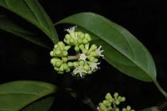

Stemonuraceae
Stemonuraceae is a family of evergreen trees and shrubs found throughout the tropics. It belongs to the order Aquifoliales within the Asterid clade. Members typically have simple, alternate, exstipulate leaves, small flowers borne in axillary cymes, and fleshy drupe fruits. The family was segregated from the formerly large and polyphyletic Icacinaceae based on molecular data.
Overview
Stemonuraceae is a family of woody flowering plants comprising about 12 genera and approximately 95 species. These plants are primarily trees and shrubs distributed across the pantropical regions of the world, found in tropical forests of Asia, Malesia, Africa, Madagascar, and the Neotropics.
The family belongs to the order Aquifoliales, a relatively small order within the Campanulid clade of the Asterids, which also includes the well-known holly family (Aquifoliaceae). Historically, the genera now placed in Stemonuraceae were part of a much larger, heterogeneous family called Icacinaceae. However, molecular phylogenetic studies revealed that Icacinaceae was polyphyletic, leading to its division and the establishment of Stemonuraceae and other families within Aquifoliales and other orders.
Members of Stemonuraceae are typically recognized by their alternate, simple, entire leaves that lack stipules, small flowers arranged in axillary cymes, and fruit that is usually a drupe containing a single seed.
Quick Facts
- Scientific Name: Stemonuraceae
- Common Name: (None widely accepted)
- Number of Genera: Approximately 12
- Number of Species: Approximately 95
- Distribution: Pantropical
- Evolutionary Group: Eudicots - Asterids - Campanulids - Aquifoliales
Key Characteristics
Growth Form and Habit
Members are evergreen trees or shrubs.
Leaves
Leaves are arranged alternately (rarely opposite) along the stems. They are simple, typically with an entire (smooth) margin, and often have a leathery texture. Stipules are absent (exstipulate).
Inflorescence
Flowers are borne in axillary (rarely terminal) inflorescences, typically structured as branched cymes, which may sometimes appear umbel-like or fascicled (clustered).
Flowers
Flowers are generally small, radially symmetrical (actinomorphic), and can be bisexual or, more commonly, unisexual (with plants being dioecious or monoecious). Key floral features include:
- Calyx: Consists of 4-5 (rarely more) small sepals that are fused at the base into a cup-like structure (calyx cup). The lobes are often minute or essentially absent. The calyx is persistent, remaining at the base of the fruit.
- Corolla: Consists of 4-5 (rarely more) petals that are usually distinct (free), although sometimes slightly fused at the very base. Petals are often somewhat fleshy and may be hairy on the inner surface.
- Androecium: Stamens are present in the same number as the petals (usually 4 or 5) and alternate with them. Filaments are distinct, often flattened, and attached to the receptacle or the petal bases. Staminodes (sterile stamens) may be present in female flowers.
- Gynoecium: The pistil consists of 2-5(-8) fused carpels (syncarpous). The ovary is positioned superiorly. It is typically unilocular (one chamber), or appears so due to incomplete partitions, and contains 1 (rarely 2) ovule(s) suspended from the apex of the locule (apical placentation). A single style (short or long) terminates in a capitate or slightly lobed stigma. A pistillode (sterile pistil) is often present in male flowers.
- Nectar Disc: A nectar-producing disc is often present, typically surrounding the base of the ovary (intrastaminal).
Fruits and Seeds
The fruit is consistently a fleshy or leathery drupe (a stone fruit), often oblong or ellipsoid in shape. It contains a single seed enclosed within a hard or stony endocarp. The persistent, cup-like calyx is usually visible at the base of the drupe.
Chemical Characteristics
Plants in this family may accumulate aluminum. Various secondary metabolites like iridoids and alkaloids might be present, reflecting their relationship within the Asterids.
Field Identification
Identifying members of Stemonuraceae involves recognizing their woody habit, leaf arrangement, characteristic inflorescences, small flower structure, and drupe fruits:
Primary Identification Features
- Habit & Location: Look for trees or shrubs in tropical regions worldwide.
- Leaves: Identify the alternate, simple, entire, exstipulate leaves.
- Inflorescence: Flowers typically borne in branched axillary cymes.
- Flowers: Small, radially symmetrical, often unisexual. Key features: 4-5 small fused sepals (cup-like base), 4-5 distinct petals, 4-5 stamens alternating with petals.
- Ovary: Superior, syncarpous, usually appearing unilocular with apical placentation.
- Fruit: A fleshy or leathery drupe, often oblong, with a persistent calyx cup at the base, containing a single seed.
Secondary Identification Features
- Petals: Often fleshy or hairy inside.
- Stamens: Filaments often flattened.
- Nectar Disc: Often present around ovary base.
Seasonal Identification Tips
- Year-round: Tree/shrub habit and alternate, simple, entire, exstipulate leaves are constant features.
- Flowering/Fruiting: Occurs seasonally, varying by species and location. Look for small flowers in axillary cymes and later for the characteristic drupes.
Common Confusion Points
- Other former Icacinaceae families (Cardiopteridaceae, Metteniusaceae): These families, also segregated from the old Icacinaceae, differ in various technical details. Cardiopteridaceae often includes vines and has different fruit types (samaras). Metteniusaceae has different stamen features and placentation.
- Aquifoliaceae (Holly family): Also Aquifoliales, trees/shrubs with alternate simple leaves. Differ in usually having petals fused at the base (sympetalous), ovary typically with 4+ locules, and often brightly colored drupes with multiple stones (pyrenes). Leaves often toothed/spiny.
- Ebenaceae (Ebony family): Trees/shrubs with alternate simple entire leaves. Differ in having sympetalous corollas, often more numerous stamens, and fruit usually a berry. Order Ericales.
- Lauraceae (Laurel family): Trees/shrubs, often aromatic with alternate simple entire leaves. Differ in having flowers usually 3-merous, lacking distinct petals (tepals), ovary of 1 carpel, and fruit a single drupe often in a cupule. Order Laurales.
Field Guide Quick Reference
Look For:
- Tropical tree or shrub
- Leaves alternate, simple, entire, exstipulate
- Inflorescence an axillary cyme
- Small flowers, radial, often unisexual
- 4-5 sepals (fused base), 4-5 distinct petals
- 4-5 stamens
- Ovary superior, syncarpous
- Fruit a drupe (1-seeded)
Key Distinctions:
- Distinct petals (vs. Lauraceae, some Icacinaceae relatives)
- 4-5 stamens (vs. more in Ebenaceae)
- Superior ovary (vs. some relatives)
- Drupe fruit (vs. capsules, berries in some look-alikes)
- No stipules (vs. Rosaceae)
Notable Examples
Genera within Stemonuraceae are found across the tropics:

Stemonurus spp. (e.g., S. secundiflorus)
(No common English name)
The type genus for the family, Stemonurus includes trees found in Southeast Asia and Malesia. They exhibit the characteristic alternate, simple, entire leaves, axillary cymose inflorescences bearing small flowers with distinct petals and stamens equal in number to petals, and oblong drupaceous fruits.

Gomphandra spp. (e.g., G. polymorpha)
(No common English name)
This is the largest genus in the family, comprising trees and shrubs distributed widely from India through Southeast Asia, Malesia, to the Pacific islands. Plants are typically dioecious, with small unisexual flowers in axillary cymes, followed by drupe fruits that are often white, yellow, or reddish.

Lasianthera africana
(No common English name)
Representing the family in Africa, this species (and genus) is found in tropical West and Central Africa. It grows as a shrub or small tree with typical Stemonuraceae features, including alternate simple leaves and small flowers leading to drupe fruits. Its presence contributes to the family's pantropical distribution.
Phylogeny and Classification
Stemonuraceae is classified within the order Aquifoliales, a relatively small order belonging to the Campanulid clade of the Asterids. This placement is strongly supported by molecular phylogenetic data and represents a significant shift from its traditional inclusion within the large, polyphyletic Icacinaceae family.
The order Aquifoliales comprises only five families: Stemonuraceae, Aquifoliaceae (hollies), Cardiopteridaceae (which includes some vines formerly in Icacinaceae), Helwingiaceae (small shrubs with epiphyllous flowers), and Phyllonomaceae. Within the order, Stemonuraceae is often found to be closely related to Aquifoliaceae and Cardiopteridaceae. The recognition of Aquifoliales as a distinct order and the placement of Stemonuraceae within it have helped to clarify relationships among Campanulid asterids.
Position in Plant Phylogeny
- Kingdom: Plantae
- Clade: Angiosperms (Flowering plants)
- Clade: Eudicots
- Clade: Asterids
- Clade: Campanulids
- Order: Aquifoliales
- Family: Stemonuraceae
Evolutionary Significance
The Stemonuraceae family is significant for:
- Resolving Icacinaceae Polyphyly: Its recognition helps dismantle the artificial Icacinaceae sensu lato and clarifies relationships within the Campanulid asterids.
- Understanding Aquifoliales: Contributes to understanding the diversity and evolution of this relatively small asterid order.
- Pantropical Distribution: Its presence across tropical regions of the Old and New Worlds points to an ancient origin and raises questions about its historical biogeography.